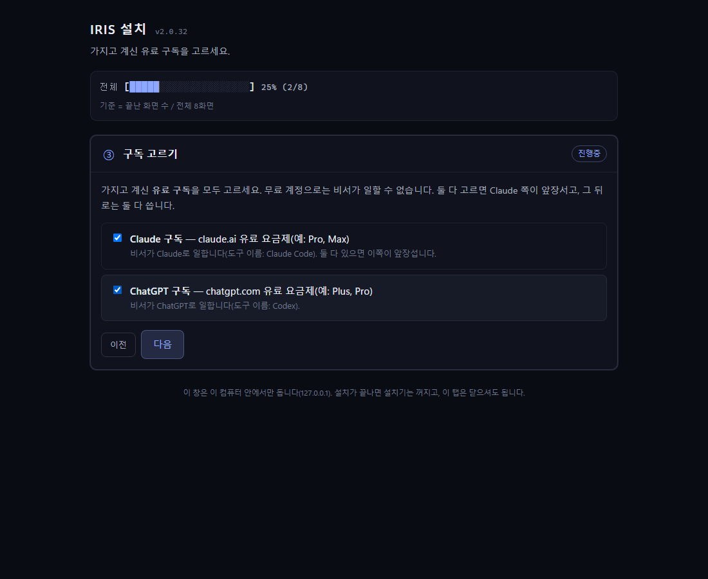

설치 안내
설치기의 여덟 화면이 차례로 무엇을 하는지, 그리고 중간에 멈췄을 때 무엇을 하면 되는지 적었습니다. 사람이 정하는 것은 구독·작업 폴더·로그인 셋뿐입니다.
받기 — 내려받기와 압축 풀기
홈에서 zip을 내려받습니다. 압축을 풀기 전에 zip 파일을 오른쪽 클릭 → 속성 → 아래쪽 「차단 해제」에 체크 → 확인을 누르세요(윈도우가 인터넷에서 받은 파일에 붙이는 표식을 지우는 것으로, 건너뛰면 윈도우 11의 스마트 앱 컨트롤이 다음 단계를 막습니다 — 막히면 바로 아래 윈도우가 막을 때를 보세요). 그다음 아무 곳에나 압축을 풉니다.
실행 — IRIS-설치.cmd 파일 더블클릭
풀어 둔 폴더에서 IRIS-설치.cmd 파일을 마우스로 더블클릭합니다 — 명령 창을 열어 무언가를 칠 필요는 없습니다(이름 끝의 .cmd는 파일 종류일 뿐입니다). 검은 창이 잠깐 보였다가 브라우저에 설치 화면(127.0.0.1:3460)이 열립니다. 사람이 손으로 하는 일은 여기까지가 대부분이고, 다음 화면부터는 구독과 작업 폴더 두 가지를 정하는 것 말고는 설치기가 알아서 진행합니다.
서명이 없는 파일이라 윈도우가 막을 때
IRIS 설치 파일은 코드 서명(개발사 인증서로 "이 파일은 누가 만들었다"를 윈도우에 증명하는 것)이 아직 없습니다. 그래서 윈도우가 "알 수 없는 앱"으로 보고 한 번 막을 수 있습니다. 파일 자체는 GitHub에 공개된 소스로 만든 것이고, 아래 SHA-256 값으로 받은 파일이 원본과 같은지 확인할 수 있습니다.
막혔을 때 순서 — 위에서부터 해 보고, 되면 멈춥니다
- 파란 창 "Windows의 PC 보호" (SmartScreen)「추가 정보」를 누르면 「실행」 단추가 나타납니다 → 실행. 이 스크립트는 동봉된 Node.js를 시작할 뿐입니다.창이 아예 안 뜨거나 "스마트 앱 컨트롤이 차단했습니다"라면 ↓
- 스마트 앱 컨트롤(SAC) 끄기 — 새 PC는 대개 켜져(또는 평가 모드) 있습니다설정 › 개인 정보 및 보안 › Windows 보안 › 앱 및 브라우저 컨트롤 › 스마트 앱 컨트롤 설정 › 「끄기」. 한 번 끄면 다시 켤 수 없습니다 — 윈도우를 새로 설치하지 않는 한. 켠 채로는 서명 없는 프로그램 대부분이 막힙니다. 끈 뒤
IRIS-설치.cmd를 다시 두 번 클릭합니다.그래도 아무 반응이 없으면 ↓ - 명령 창에서 직접 실행
- 압축을 푼 폴더를 엽니다.
- 주소 표시줄(폴더 경로가 적힌 칸)을 클릭해
cmd라고 치고 Enter → 그 폴더에서 검은 창(명령 프롬프트)이 열립니다. - 검은 창에 다음 한 줄을 붙여 넣고 Enter:
IRIS-설치.cmd - 몇 초 뒤 브라우저가 열리며 설치 화면이 나오면 성공. 검은 창은 스스로 닫힙니다.
- 문의그 화면을 사진으로 찍어(또는 글자를 복사해) 문의해 주세요. zip 뿌리의 「설치가 안 되면.txt」에 같은 안내가 있습니다.
받은 파일이 원본인지 확인 (선택)
PowerShell을 열고 zip이 있는 폴더에서 아래 명령을 실행합니다. 나온 값이 그 아래 값과 같으면 같은 파일입니다.
Get-FileHash .\IRIS-Setup_v2.0.34_2026-09-21.zip -Algorithm SHA256adcb8c56e201c19a1ca2d4c32fd4e00a1d52576fd10ef528eed15d0f24e4895e
설치 중 스마트 앱 컨트롤이 켜져 있으면 (2.0.1부터)
설치기의 사전 점검이 「스마트 앱 컨트롤이 켜져 있습니다」라고 미리 알립니다. 그 상태로도 대개 설치는 되지만, 동봉한 파이썬 도구가 차단돼 세팅이 venv(파이썬 환경) 단계에서 멈출 수 있습니다. 그러면 위 ②대로 끄고 「다시 시도」를 누르면 됩니다.
설치기의 여덟 화면
설치 화면은 ①부터 ⑧까지 차례로 넘어가고, 위쪽 진행 막대가 몇 번째 화면인지 보여 줍니다. 사람이 정하는 것은 ③ 구독, ④ 작업 폴더, ⑦ 로그인 셋뿐이고 나머지는 설치기가 알아서 합니다. 인터넷은 ⑦에서만 씁니다.
① 준비 확인
윈도우 판, 64비트 CPU, C 드라이브 여유(3 GB), PowerShell, 포트, 받은 파일의 무결성을 자동으로 확인합니다. 아무것도 바꾸지 않고 읽기만 하며, 보통 10초가 걸립니다. 막는 것이 있으면 무엇을 하면 되는지 그 자리에 적히고, 인터넷이나 스마트 앱 컨트롤처럼 나중에 영향이 있을 수 있는 것은 「알아 두기」로만 남깁니다.

② 설치 위치
IRIS는 항상 C:\IRIS에 설치되며 위치를 묻지 않습니다 — 그 자리를 쓸 수 있는지만 확인하고 「다음」을 누릅니다. 이미 IRIS가 설치된 PC라면 이 자리에 「새 판으로 업데이트」 화면이 대신 나오고, 「업데이트 시작」을 누르면 자료·설정·로그인을 그대로 둔 채 바뀐 부품만 갈아 끼웁니다.
③ 구독 고르기
가진 유료 구독을 모두 표시합니다: Claude, ChatGPT, 또는 둘 다. 둘 다면 Claude Code가 앞장서고 그 뒤로는 둘 다 씁니다. ChatGPT만 골랐다면 Codex가 앞장서며 Claude Code는 내려받지 않습니다.

④ 작업 폴더 구성
비서와 함께 쓸 일의 방(역할 → 분야 → 일거리 폴더)을 미리 만들어 둡니다. 교사·연구자·사업가·개발자·직장인·학생·작가 프리셋 7종 가운데 하나를 누르면 오른쪽에 만들어질 폴더 나무가 바로 보이고, 이름을 고치거나 칸을 더할 수 있습니다. 영어 이름은 비워 둬도 됩니다. 지금 정하기 어려우면 「나중에 비서와 정하기」로 넘어가도 됩니다.

⑤ 이대로 설치할까요
고른 구독과 만들어질 폴더 나무를 요약으로 보여 줍니다. 여기까지가 사람이 정하는 전부이며, 「이대로 설치 시작」을 누르면 다음부터는 설치기가 혼자 진행합니다.
⑥ 설치 중
인터넷 없이 아홉 가지 일을 순서대로 합니다 — 동봉된 프로그램 풀기, 환경변수, 작업실 뼈대, 작업 폴더, 파이썬 환경, 에이전트 연결, 중계기 준비, 목록 카드, 검사. 진행 막대에 지금 하는 일이 표시되고, 중간에 오류가 나면 오류 코드와 로그 위치가 그 자리에 적힙니다. 「다시 시도」는 그 단계부터 다시 하며 이미 만든 파일을 지우지 않습니다. 몇 분이 걸립니다.

⑦ 계정 연결
여기부터 인터넷을 씁니다. 먼저 연결을 확인하고(막힌 주소가 있으면 이름을 알려 주고 멈춥니다 — 인터넷이 되는 곳에서 다시 열면 여기서부터 이어집니다), Claude 구독을 골랐다면 Claude Code를 내려받습니다. 그다음 고른 구독마다 「로그인」 단추를 누르면 브라우저에 그 계정의 로그인 페이지가 열립니다 — 둘 다면 Claude, ChatGPT 순서입니다. 로그인 창이 늦게 뜨거나 안 보여도 몇 번이고 다시 눌러도 안전합니다. 로그인이 끝나면 계정 중계기가 켜지고 계정이 연결됩니다.
⑧ 완료
하려던 일, 기존 자료의 안전, 결과, 남은 일의 뜻, 이제 할 일 — 다섯 항목의 보고를 보여 줍니다(같은 내용이 C:\IRIS\_agent\setup\설치보고-*.md에도 남습니다). 「IRIS 열기」를 누르면 IRIS 창이 뜨고 비서가 인수 문서를 읽고 먼저 인사합니다. 메신저 로그인 안내 카드가 한 번 뜨는데, 「메신저 열기」로 지금 하거나 「나중에」로 넘겨도 됩니다.

업데이트
새 판이 나오면 두 길 가운데 하나로 갱신합니다. 어느 쪽이든 자료·설정·로그인은 그대로 둡니다. ① IRIS 창의 설정 → 업데이트에 새 판이 표시되면 그 절 위쪽의 「업데이트」 단추를 누르세요 — 내려받기와 검사가 끝나면 확인 카드가 뜹니다. 확인하면 열려 있던 세션이 모두 끝나고 새 판이 적용된 뒤, 창이 다시 열리며 그 세션들이 자동으로 이어집니다. ② 홈에서 새 zip을 받아 실행해도 됩니다 — 이미 설치된 PC를 알아보고 「새 판으로 업데이트」 화면을 보이며, 「업데이트 시작」을 누르면 IRIS 프로그램을 닫고 바뀐 부품만 갈아 끼운 뒤 IRIS 창을 다시 엽니다. 창의 업데이트 확인이 GitHub에 막혀 새 판을 못 보는 망에서는 ②가 확실합니다.
1.x를 쓰고 계셨다면: 2.0은 설치 방식이 바뀌어 새로 설치합니다. 기존 자료는 그대로 두고 설치기를 실행하면 됩니다. 위 「업데이트」 단추 대신 홈의 내려받기로 새 zip을 받아 이 페이지의 순서(받기·실행 → ①~⑧)를 그대로 따르세요.
막혔을 때
설치가 안 되면 — 「차단 해제」를 건너뛴 경우의 자세한 해결법
순서대로 짚어 보려면 위 「서명이 없는 파일이라 윈도우가 막을 때」가 먼저입니다. 아래는 zip 안 「설치가 안 되면.txt」와 같은 내용입니다.
IRIS-설치.cmd 를 두 번 눌렀는데 아무 일도 일어나지 않거나 "이 앱은 보호를 위해 차단되었습니다" 같은 창이 뜨는 경우입니다. 원인은 윈도의 스마트 앱 컨트롤(Smart App Control)입니다. 인터넷에서 받은 파일에 "웹에서 왔음" 표식이 붙는데, 이 기능이 켜져 있으면 그 표식이 붙은 실행 파일을 실행 단추도 없이 막습니다. 컴퓨터나 IRIS가 고장 난 것이 아닙니다. 아래 둘 중 하나만 하면 됩니다.
[방법 ㉮] 차단 해제하고 다시 풀기 (권장)
- 내려받은 zip 파일을 마우스 오른쪽 단추로 누릅니다.
- 맨 아래 "속성"을 누릅니다.
- 창 아래쪽 "보안: 이 파일은 다른 컴퓨터에서 왔으며..." 옆 「차단 해제」 네모 칸을 체크합니다. (이 문구가 안 보이면 이미 해제된 것입니다. 방법 ㉯로 가세요.)
- "확인"을 누릅니다.
- 먼저 풀어 둔 폴더는 지우고, zip을 다시 풉니다.
- IRIS-설치.cmd 를 다시 두 번 누릅니다.
[방법 ㉯] 탐색기 주소창에서 실행하기
- zip을 푼 폴더를 탐색기에서 엽니다.
- 위쪽 주소창(폴더 경로가 적힌 칸)을 한 번 누릅니다. 경로 글자가 파랗게 선택됩니다.
- 그 자리에 아래를 그대로 쳐 넣고 Enter 를 누릅니다.
cmd /c IRIS-설치.cmd - 검은 창이 뜨고 설치가 시작됩니다.
설치기가 만드는 파일에는 이 표식이 붙지 않습니다. 그래서 한 번만 넘어가면 그 다음 단계부터는 이 문제가 다시 생기지 않습니다.
그래도 안 될 때
- 설치 기록(로그)이 아래에 남아 있습니다. 파일 탐색기 주소창에 아래를 붙여 넣으면 폴더가 열립니다.
%LOCALAPPDATA%\IRIS-Installer\bootstrap.log - 그림과 함께 설명한 안내는 홈페이지에 있습니다.
https://iris-workspace.com/install.html#sac - 도움을 요청할 때 위 로그 파일을 함께 보내 주시면 어디서 막혔는지 바로 알 수 있습니다.
로그인 창이 뜨지 않습니다
뒤에 열린 브라우저 탭이 있는지 보세요. 1분이 지나도 없으면 설치 화면의 「다시 시도」를 누릅니다. 로그인 단계는 몇 번을 반복해도 안전합니다.
다른 문제가 생겼습니다
설치기가 멈춘 화면(⑥ 설치 중·⑦ 계정 연결·업데이트·완료)에는 「개발자에게 신고하기」 단추가 있습니다. 누르면 멈춘 단계·오류 코드·진단·로그 끝부분이 윈도 계정 이름을 가린 채 개발자에게 전달됩니다(2.0.20부터). 기록 파일은 C:\IRIS\_agent\setup\installer.log와 %LOCALAPPDATA%\IRIS-Installer\server.log에 있습니다. 그래도 안 되면 아래 깨끗이 지우고 새로 설치를 보세요.
그래도 안 되면 — 깨끗이 지우고 새로 설치
업데이트도, 위 방법도 안 될 때의 마지막 방법입니다. 2.0.x가 이미 설치된 PC는 보통 이 단계가 필요 없습니다 — 새 zip을 실행하면 「업데이트 시작」 단추가 나오고 자료·설정·로그인은 그대로 남습니다. 아래는 그것마저 막힐 때, 그리고 1.x에서 올라올 때의 순서입니다. C:\IRIS 안에 만든 문서가 있으면 먼저 다른 곳에 옮겨 두세요 — ③에서 폴더째 지워집니다.
- ① PC를 다시 시작합니다뒤에 남아 있는 IRIS 창·설치기·중계기가 전부 꺼집니다. 이 단계를 건너뛰면 지우기가 「접근이 거부되었습니다」로 막히거나, 새 설치기가 옛 설치기 화면을 열어 줍니다.
- ② PowerShell을 관리자 권한으로 엽니다시작 단추를 오른쪽 클릭 → 「터미널(관리자)」 또는 「Windows PowerShell(관리자)」 → 파란(또는 검은) 창이 뜹니다.
- ③ 아래 네 줄을 통째로 복사해 붙여 넣고 EnterIRIS 폴더, 설치기 기록 폴더, 바탕화면 바로가기를 지웁니다. 없는 항목은 조용히 건너뜁니다. 마지막 줄이
FalseFalse로 나오면 다 지워진 것입니다.True가 나오면 ①을 다시 하세요(무언가 아직 실행 중).Remove-Item -LiteralPath 'C:\IRIS' -Recurse -Force -ErrorAction SilentlyContinue Remove-Item -LiteralPath "$env:LOCALAPPDATA\IRIS-Installer" -Recurse -Force -ErrorAction SilentlyContinue Remove-Item -LiteralPath ([Environment]::GetFolderPath('Desktop') + '\IRIS.lnk') -Force -ErrorAction SilentlyContinue Test-Path 'C:\IRIS'; Test-Path "$env:LOCALAPPDATA\IRIS-Installer" - ④ (선택) IRIS를 완전히 떠날 때만 — 환경변수 지우기다시 설치할 계획이면 이 줄은 필요 없습니다(새 설치기가 덮어씁니다). IRIS를 완전히 지우는 경우에만 붙여 넣으세요. 설치기가 등록해 둔 사용자 환경변수 4개를 지웁니다.
foreach ($n in 'CLAUDE_CONFIG_DIR','CODEX_HOME','ANTHROPIC_BASE_URL','TEAMCLAUDE_CONFIG') { [Environment]::SetEnvironmentVariable($n, $null, 'User') } - ⑤ 홈에서 최신 zip을 받아 처음부터 설치이 페이지의 받기·실행 → ①~⑧ 순서 그대로입니다. 구독 로그인을 한 번 다시 합니다. 설치기 화면 오른쪽 위의 판 표시가 홈의 최신 판과 같은지 확인하세요 — 다르면 ①(다시 시작)부터 다시.
지우기
트레이에서 IRIS를 끄고 위 「깨끗이 지우고 새로 설치」의 ①~④(⑤는 빼고)를 따르면 됩니다. C:\IRIS 폴더와 바탕화면 바로가기, 환경변수까지 지워집니다.